羽田空港
| 日付 | 2016年9月19日（月） |
|---|---|
| メンバー | 家族（妻、長女・5歳、長男・3歳） |
| アクセス | 電車 |
夏休みが終わってからずっと天候不順が続く。
本日も天気が悪いのだが、最近お出かけをしていないので、
羽田空港に遊びに行ってみることにする。
早速展望デッキに到着。娘は以前来たことがあるが、
息子にとっては初めて間近で見る飛行機だ。
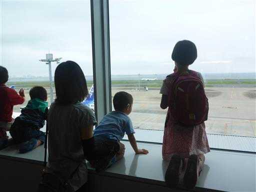
室外の展望デッキに出てみる。ここでは飛行機離陸時の大きな音が響き渡っている。
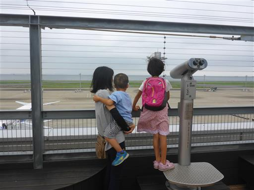
飛行機がたくさん並んでいる。
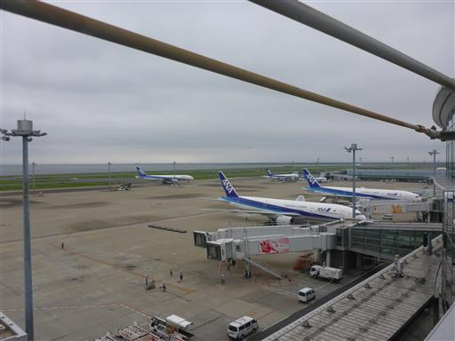
超過密スケジュールの飛行場のため、次々と飛行機が離陸していく。
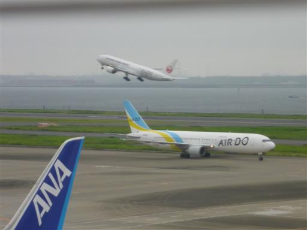
真正面に着陸した飛行機がやって来る。ボーディングブリッジが飛行機と接続したり、
荷物の積み下ろしなどを行ったりと、見ていると結構飽きない。
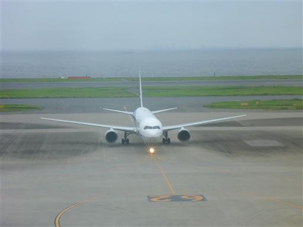
まだ9月だというのに異様に寒く長居は無理。
建物内に入って昼食を取ったら、空港内を散策する。
多くの店があり、半ばショッピングモールのようだ。
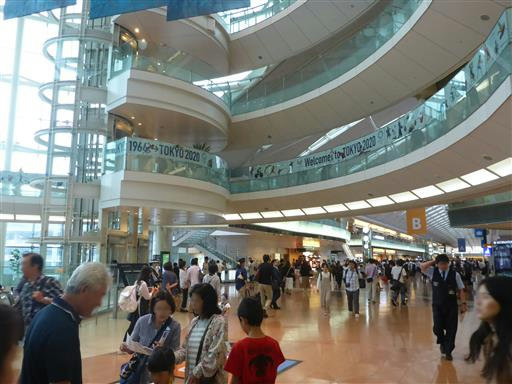
最近話題になったホンダNSXが展示されている。価格はなんと2370万円だ。
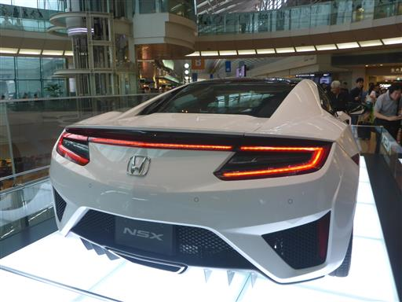
無料巡回バスに乗って国際線ターミナルに移動する。こちらは閑散としている。
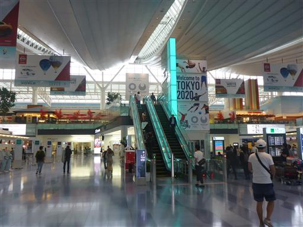
見事な紅葉が並んでいる。良く見ると偽物だ。
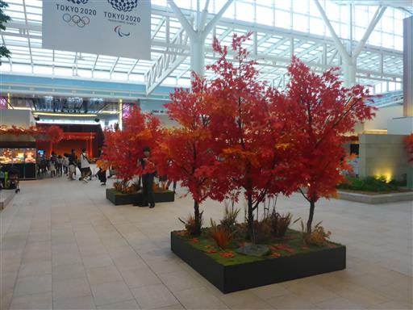
江戸小路。江戸らしい町並みが広がっている。実態は土産物屋だ。
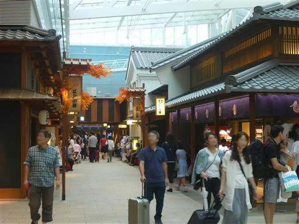
COOL ZONE。入口は格好良いが、中に入ってみても大したものは無い。

国際線の展望デッキに出る。小雨が降ってきて、さらに寒くなっている。
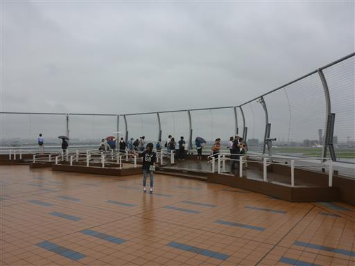
機体にキティちゃんが描かれている。国際線は飛行機のバリエーションがある。
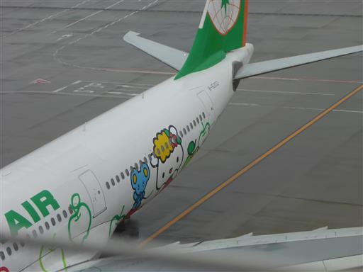
電子パネルで各国の飛行機の説明が見られて結構面白い。
とても寒い羽田空港見学だった。
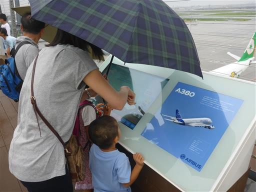
他の記録